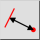
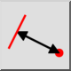
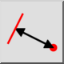
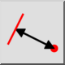

Distanza da entità a punto
Barra degli strumenti / Icona:
 

Menù: Info > Distanza da entità a punto
Scorciatoia: I, E
Comandi: infodistep | ie
Questa è una traduzione automatica.
Barra degli strumenti / Icona:
 

Menù: Info > Distanza da entità a punto
Scorciatoia: I, E
Comandi: infodistep | ie
Questo strumento misura l'esatta distanza tra un'entità e un punto dato dall'utente.